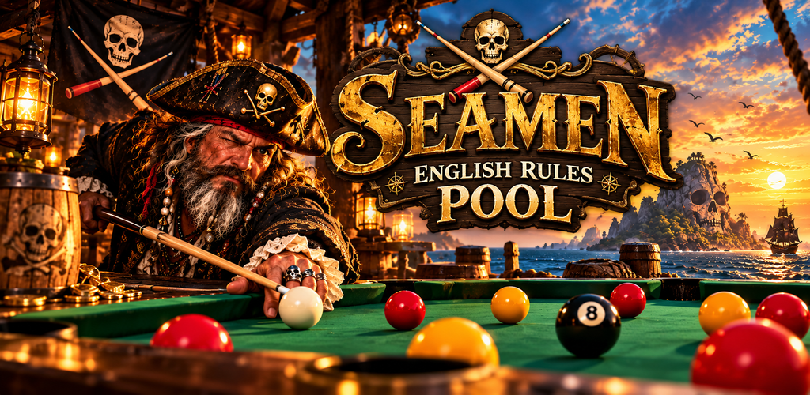

Current feature
Seamen English Rules Pool
Genuine English pool wrapped up in a ridiculous pirate adventure. Head to the tavern and beyond, challenge a cast of interesting and questionable characters, unlock shiny rewards, and prove what you can do at the table.